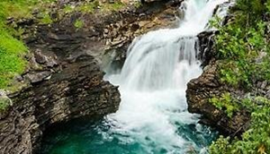
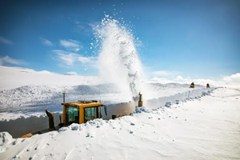

En av Sveriges mest spektakulära vägar, slingrande genom fjäll, skogar och vattenfall.
Vildmarksvägen är en av Sveriges mest spektakulära vägsträckor och bjuder på en naturupplevelse utöver det vanliga. Vägen slingrar sig från Strömsund till Vilhelmina genom fjäll, skogar och dalgångar. På högsta punkten, Stekenjokk, kör du över 870 meter över havet där snön ofta ligger kvar långt in på sommaren. Vägen öppnas vanligtvis i början av juni när snön plogats bort, och då möts resenärer av meterhöga snöväggar längs vägkanterna. Det är en plats där naturens krafter verkligen känns nära, och där stillheten bara bryts av vinden över fjället. Många väljer att stanna till på vägen för att vandra, fotografera eller bara andas den friska fjälluften. Den klara luften och de vidsträckta vyerna ger en känsla av frihet som är svår att hitta någon annanstans.
Längs rutten passerar du flera kända platser som Hällingsåfallet, Ankarede kyrkstad och Fatmomakke. Hällingsåfallet är ett av Sveriges mäktigaste vattenfall, där vattnet störtar ner i en djup ravin som formats under tusentals år. Ankarede är en gammal samisk kyrkstad och ett kulturellt nav med en historia som sträcker sig långt tillbaka i tiden. Här samsas traditionella kåtor med små trästugor längs strandkanten. Vid Stekenjokkplatån möter du ofta renar som lugnt vandrar över vägen, och det är inte ovanligt att se örn sväva över fjällkammen. Den karga naturen här uppe kontrasterar vackert mot den grönskande skogen längre söderut. Många fotografer kommer hit speciellt för att fånga midnattssolen och de dramatiska landskapen.
Under sommaren lockar Vildmarksvägen äventyrare, fotografer och familjer som söker tystnad och närhet till naturen. Hösten förvandlar landskapet till ett färgsprakande skådespel av gult, rött och orange, medan vintern bäddar in hela området i gnistrande snö och stillhet. Vägen är delvis stängd vintertid, men de som kommer tillbaka år efter år säger att varje säsong har sin egen magi. Längs vägen finns små gårdsbutiker, kaféer och lokala hantverkare som ger resan en personlig prägel. För många blir färden längs Vildmarksvägen mer än bara en bilresa, den blir en upplevelse av frihet, stillhet och storslagen natur. Det är en plats där man verkligen kan koppla av, reflektera och njuta av enkelheten.

